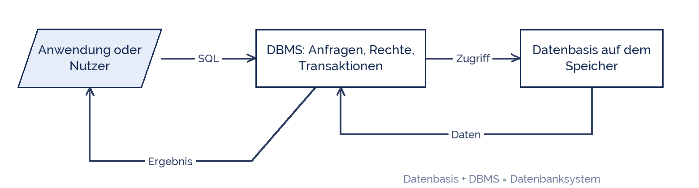

fietzfotos
fietzfotos
Good morning!
Nur das Schöne wird die Welt retten!
Fjodor Dostojewski
Nicht verzagen, Doc Alvers fragen!
Informatik — Grundkurs 12
Das Datenbanksystem
DBMS und Datenbasis, die Drei-Ebenen-Architektur und die ersten Befehle
Nicht verzagen, Doc Alvers fragen!
Kapitel 01
Aufbau
Zwei Teile, klar getrennt
Nicht verzagen, Doc Alvers fragen!
Der Aufbau eines Datenbanksystems
Keine Anwendung greift direkt auf die Dateien zu — nur über das DBMS
Genau das löst die fünf Probleme der Dateiverwaltung von letzter Woche

Nicht verzagen, Doc Alvers fragen!
Die Aufgaben des DBMS
| Aufgabe | heißt konkret |
|---|---|
| Datendefinition | Strukturen anlegen und ändern (DDL) |
| Datenmanipulation | einfügen, ändern, löschen, abfragen (DML) |
| Datenintegrität | Regeln durchsetzen: Typen, Schlüssel, Beziehungen |
| Datenschutz | Rechte je Nutzer und je Tabelle (DCL) |
| Transaktionen | mehrere Schritte ganz oder gar nicht ausführen |
| Mehrbenutzerbetrieb | gleichzeitige Zugriffe ordnen |
| Datensicherung | Sicherungskopien und Wiederherstellung |
DDL, DML, DCL sind die drei Sprachteile von SQL — sie kommen in den nächsten Wochen dran
Nicht verzagen, Doc Alvers fragen!
Kapitel 02
Drei Ebenen
Warum Programme Änderungen nicht merken
Nicht verzagen, Doc Alvers fragen!
Die ANSI-SPARC-Architektur
| Ebene | beschreibt | wer sieht sie |
|---|---|---|
| externe Ebene | Sichten je Anwendung | Programme und Nutzer |
| konzeptionelle Ebene | das Gesamtschema aller Daten | Datenbankentwurf |
| interne Ebene | Speicherung, Dateien, Indexe | das DBMS |
Datenunabhängigkeit: ändert sich die interne Ebene, merken die Programme nichts
Das ist der eigentliche Grund für die Trennung — und der größte Unterschied zur Datei
Nicht verzagen, Doc Alvers fragen!
Was das praktisch bedeutet
Ein Index wird angelegt: Abfragen werden schneller, kein Programm ändert sich
Die Datenbank zieht auf einen anderen Server um: die Anwendungen merken nichts
Eine Sicht zeigt dem Sekretariat andere Spalten als der Schulleitung
Bei Dateien müsste dafür jedes Programm angefasst werden
Deshalb ist die Trennung keine Theorie, sondern die Grundlage der Wartbarkeit
Nicht verzagen, Doc Alvers fragen!
Kapitel 03
Erste Schritte
Eine Datenbank anlegen
Nicht verzagen, Doc Alvers fragen!
Eine Datenbank und eine Tabelle anlegen
-- SQLite: die Datenbank ist eine Datei
-- MySQL: CREATE DATABASE schule; USE schule;
CREATE TABLE Schueler (
snr INTEGER PRIMARY KEY,
name TEXT NOT NULL,
vorname TEXT NOT NULL,
klasse TEXT,
geburt DATE
);Nicht verzagen, Doc Alvers fragen!
Was in diesen Zeilen alles steckt
CREATE TABLE gehört zur DDL — es beschreibt die Struktur, nicht die Daten
PRIMARY KEY macht snr eindeutig und legt automatisch einen Index an
NOT NULL ist eine Integritätsregel: das Feld darf nicht leer bleiben
Die Datentypen entscheiden über Sortierung, Rechnen und Speicherbedarf
Nach diesem Befehl ist die Tabelle leer, aber fertig definiert
Nicht verzagen, Doc Alvers fragen!
Datenbasis plus DBMS ergibt das Datenbanksystem. Und die drei Ebenen sorgen dafür, dass Änderungen unten oben nicht ankommen.
Merksatz
Nicht verzagen, Doc Alvers fragen!
Fun Facts: DBMS
Das erste kommerzielle relationale DBMS war Oracle V2 von 1979 — eine V1 gab es nie
IBM System R war der Forschungsprototyp, in dem SQL entstand
SQLite ist das am weitesten verbreitete DBMS der Welt — es steckt in jedem Smartphone
Die ANSI-SPARC-Architektur wurde 1975 vorgeschlagen und gilt bis heute
Ein DBMS ist eines der komplexesten Programme überhaupt — Millionen Zeilen Code
Nicht verzagen, Doc Alvers fragen!
Eure Aufgabe am Rechner
Legt eine Datenbank schule an (SQLite-Datei oder MySQL)
Erstellt die Tabelle Schueler wie oben
Erstellt eine zweite Tabelle Kurs mit knr, bezeichnung und lehrkraft
Probiert aus, was bei einem doppelten Primärschlüssel passiert
Notiert zu jeder Aufgabe des DBMS aus Kapitel 1 ein Beispiel aus eurer Datenbank
Nicht verzagen, Doc Alvers fragen!